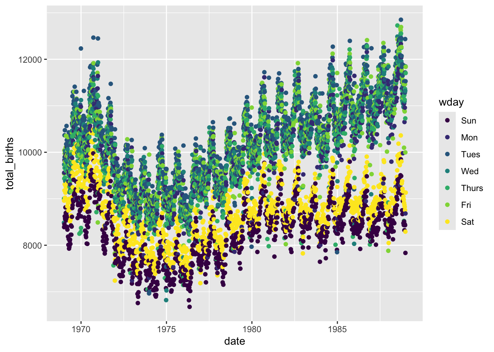

Below is the visual representation of the data science process we saw earlier. Which stage are we in currently?
Recall that wrangling is important. It is much of what we spend our efforts on in Data Science. There are lots of steps, hence R functions, that can go into data wrangling. But we can get far with the following 6 wrangling verbs:
verb
action
arrange
arrange the rows according to some column
filter
filter out or obtain a subset of the rows
select
select a subset of columns
mutate
mutate or create a column
summarize
calculate a numerical summary of a column
group_by
group the rows by a specified column
Example 1: Single Verb
Let’s start by working with some TidyTuesday data on penguins. This data includes information about penguins’ flippers (“arms”) and bills (“mouths” or “beaks”). Let’s import this using read_csv(), a function in the tidyverse package. For the most part, this is similar to read.csv(), though read_csv() can be more efficient at importing large datasets.
library(tidyverse)penguins <-read_csv('https://raw.githubusercontent.com/rfordatascience/tidytuesday/master/data/2020/2020-07-28/penguins.csv')# Check it outhead(penguins)
# A tibble: 6 × 8
species island bill_length_mm bill_depth_mm flipper_length_mm body_mass_g
<chr> <chr> <dbl> <dbl> <dbl> <dbl>
1 Adelie Torgersen 39.1 18.7 181 3750
2 Adelie Torgersen 39.5 17.4 186 3800
3 Adelie Torgersen 40.3 18 195 3250
4 Adelie Torgersen NA NA NA NA
5 Adelie Torgersen 36.7 19.3 193 3450
6 Adelie Torgersen 39.3 20.6 190 3650
# ℹ 2 more variables: sex <chr>, year <dbl>
Construct a plot that allows us to examine how the relationship between body mass and bill length varies by species and sex.
#Making a scatter plot with x= body mass, y = bill length, color = species, and facet wrap by sexggplot(penguins, aes(x = body_mass_g, y = bill_length_mm, color = sex))+geom_point() +facet_wrap(~species)
Use the 6 wrangling verbs to address each task in the code chunk below. You can tack on |> head() to print out just 6 rows to keep your rendered document manageable. Most of these require just 1 verb.
# Get data on only Adelie penguins that weigh more than 4700gpenguins |>filter(species =="Adelie", body_mass_g >4700)|>head()
# A tibble: 2 × 8
species island bill_length_mm bill_depth_mm flipper_length_mm body_mass_g
<chr> <chr> <dbl> <dbl> <dbl> <dbl>
1 Adelie Biscoe 41 20 203 4725
2 Adelie Biscoe 43.2 19 197 4775
# ℹ 2 more variables: sex <chr>, year <dbl>
# Get data on penguin body mass only# Show just the first 6 rowspenguins |>select(body_mass_g)|>head()
# A tibble: 6 × 1
body_mass_g
<dbl>
1 3750
2 3800
3 3250
4 NA
5 3450
6 3650
# Sort the penguins from smallest to largest body mass# Show just the first 6 rowspenguins |>arrange(body_mass_g)|>head()
# Calculate the average body mass across all penguins# Note: na.rm = TRUE removes the NAs from the calculationpenguins |>summarize(mean =mean(body_mass_g, na.rm =TRUE))|>head()
# A tibble: 1 × 1
mean
<dbl>
1 4202.
# Calculate the average body mass by speciespenguins |>group_by(species) |>summarize(mean =mean(body_mass_g, na.rm =TRUE))
# A tibble: 3 × 2
species mean
<chr> <dbl>
1 Adelie 3701.
2 Chinstrap 3733.
3 Gentoo 5076.
# Create a new column that records body mass in kilograms, not grams# NOTE: there are 1000 g in 1 kg# Show just the first 6 rowspenguins |>mutate(body_mass_kg = body_mass_g/1000) |>head()
# A tibble: 6 × 9
species island bill_length_mm bill_depth_mm flipper_length_mm body_mass_g
<chr> <chr> <dbl> <dbl> <dbl> <dbl>
1 Adelie Torgersen 39.1 18.7 181 3750
2 Adelie Torgersen 39.5 17.4 186 3800
3 Adelie Torgersen 40.3 18 195 3250
4 Adelie Torgersen NA NA NA NA
5 Adelie Torgersen 36.7 19.3 193 3450
6 Adelie Torgersen 39.3 20.6 190 3650
# ℹ 3 more variables: sex <chr>, year <dbl>, body_mass_kg <dbl>
How many penguins of each species do we have? Create a viz that addresses this question.
ggplot(penguins, aes(x = species))+geom_bar(color ="blue", fill ="pink")
Can we use the 6 verbs to calculate exactly how many penguins in each species?
# A tibble: 3 × 2
species `n()`
<chr> <int>
1 Adelie 152
2 Chinstrap 68
3 Gentoo 124
The count() verb provides a handy shortcut!
#The count function provides a shortcut to count the total amount of individuals in a column.penguins |>count(species)
# A tibble: 3 × 2
species n
<chr> <int>
1 Adelie 152
2 Chinstrap 68
3 Gentoo 124
Example 2: Multiple Verbs
Let’s practice combining some verbs. For each task:
Translate the prompt into our 6 verbs. That is, think before you type.
Build your code line by line. It’s important to understand what’s being piped into each function!
Ask what you can rearrange and still get the same result.
Read your final code like a paragraph / a conversation. Would another person be able to follow your logic?
# Sort Gentoo penguins from biggest to smallest with respect to their bill length in cm (there are 10 mm in a cm)penguins |>filter(species =="Gentoo") |>mutate(bill_length_cm = bill_length_mm/10)|>arrange(desc(bill_length_cm)) |>head ()
# Sort the species from smallest to biggest with respect to their average bill length in cmpenguins |>mutate(bill_length_cm = bill_length_mm/10) |>group_by(species) |>summarize(mean_bill_length =mean(bill_length_cm, na.rm =TRUE)) |>arrange(desc(mean_bill_length)) |>head ()
# A tibble: 3 × 2
species mean_bill_length
<chr> <dbl>
1 Chinstrap 4.88
2 Gentoo 4.75
3 Adelie 3.88
Example 3: Interpret Code
Let’s practice reading and making sense of somebody else’s code. What do you think this produces?
How many columns? Rows?
What are the column names?
What’s represented in each row?
Once you’ve thought about it, put the code inside a chunk and run it!
penguins |> filter(species == “Chinstrap”) |> group_by(sex) |> summarize(min = min(body_mass_g), max = max(body_mass_g)) |> mutate(range = max - min)
penguins |>filter(species =="Chinstrap") |>group_by(sex) |>summarize(min =min(body_mass_g), max =max(body_mass_g)) |>mutate(range = max - min)
# A tibble: 2 × 4
sex min max range
<chr> <dbl> <dbl> <dbl>
1 female 2700 4150 1450
2 male 3250 4800 1550
15.2 Exercises Part 1: Same Verbs, New Tricks
Exercise 1: More Filtering
Recall the “logical comparison operators” we can use to filter() our data:
symbol
meaning
==
equal to
!=
not equal to
>
greater than
>=
greater than or equal to
<
less than
<=
less than or equal to
%in% c(***, ***)
a list of multiple values
Part a
# Create a dataset with just Adelie and Chinstrap using %in%# Pipe this into `count(species)` to confirm that you only have these 2 speciespenguins |>filter(species %in%c("Adelie", "Chinstrap")) |>count(species)
# A tibble: 2 × 2
species n
<chr> <int>
1 Adelie 152
2 Chinstrap 68
# Create a dataset with just Adelie and Chinstrap using !=# Pipe this into `count(species)` to confirm that you only have these 2 speciespenguins |>filter(species !="Gentoo") |>count(species)
# A tibble: 2 × 2
species n
<chr> <int>
1 Adelie 152
2 Chinstrap 68
Part b
Notice that some of our penguins have missing (NA) data on some values:
head(penguins)
# A tibble: 6 × 8
species island bill_length_mm bill_depth_mm flipper_length_mm body_mass_g
<chr> <chr> <dbl> <dbl> <dbl> <dbl>
1 Adelie Torgersen 39.1 18.7 181 3750
2 Adelie Torgersen 39.5 17.4 186 3800
3 Adelie Torgersen 40.3 18 195 3250
4 Adelie Torgersen NA NA NA NA
5 Adelie Torgersen 36.7 19.3 193 3450
6 Adelie Torgersen 39.3 20.6 190 3650
# ℹ 2 more variables: sex <chr>, year <dbl>
There are many ways to handle missing data. The right approach depends upon your research goals. A general rule is: Only get rid of observations with missing data if they’re missing data on variables you need for the specific task at hand!
Example 1
Suppose our research focus is just on body_mass_g. Two penguins are missing this info:
# NOTE the use of is.na()penguins |>summarize(sum(is.na(body_mass_g)))
# A tibble: 1 × 1
`sum(is.na(body_mass_g))`
<int>
1 2
Let’s define a new dataset that removes these penguins:
# NOTE the use of is.na()penguins_w_body_mass <- penguins |>filter(!is.na(body_mass_g))# Compare the number of penguins in this vs the original datanrow(penguins_w_body_mass)
[1] 342
nrow(penguins)
[1] 344
Note that some penguins in penguins_w_body_mass are missing info on sex, but we don’t care since that’s not related to our research question:
penguins_w_body_mass |>summarize(sum(is.na(sex)))
# A tibble: 1 × 1
`sum(is.na(sex))`
<int>
1 9
Example 2
In the very rare case that we need complete information on every variable for the specific task at hand, we can use na.omit() to get rid of any penguin that’s missing info on any variable:
penguins_complete <- penguins |>na.omit()
How many penguins did this eliminate?
nrow(penguins_complete)
[1] 333
nrow(penguins)
[1] 344
Part c
Explain why we should only use na.omit() in extreme circumstances.
Otherwise we are getting rid of very valuable data!
Exercise 2: More Selecting
Being able to select() only certain columns can help simplify our data. This is especially important when we’re working with lots of columns (which we haven’t done yet). It can also get tedious to type out every column of interest. Here are some shortcuts:
-removes a given variable and keeps all others (e.g. select(-island))
starts_with("___"), ends_with("___"), or contains("___") selects only the columns that either start with, end with, or simply contain the given string of characters
Use these shortcuts to create the following datasets.
Exercise 3: Arranging, Counting, & Grouping by Multiple Variables
We’ve done examples where we need to filter() by more than one variable, or select() more than one variable. Use your intuition for how we can arrange(), count(), and group_by() more than one variable.
# Change this code to sort the penguins by species, and then island name# NOTE: The first row should be an Adelie penguin living on Biscoe islandpenguins |>arrange(species, island)
# Change this code to count the number of male/female penguins observed for each speciespenguins |>count(species, sex)
# A tibble: 8 × 3
species sex n
<chr> <chr> <int>
1 Adelie female 73
2 Adelie male 73
3 Adelie <NA> 6
4 Chinstrap female 34
5 Chinstrap male 34
6 Gentoo female 58
7 Gentoo male 61
8 Gentoo <NA> 5
# Change this code to calculate the average body mass by species and sexpenguins |>group_by(species, sex) |>summarize(mean =mean(body_mass_g, na.rm =TRUE))
# A tibble: 8 × 3
# Groups: species [3]
species sex mean
<chr> <chr> <dbl>
1 Adelie female 3369.
2 Adelie male 4043.
3 Adelie <NA> 3540
4 Chinstrap female 3527.
5 Chinstrap male 3939.
6 Gentoo female 4680.
7 Gentoo male 5485.
8 Gentoo <NA> 4588.
Exercise 4: Dates
Before some wrangling practice, let’s explore another important concept: working with or mutating date variables. Dates are a whole special object type or class in R that automatically respect the order of time.
# Get today's dateas.Date(today())
[1] "2025-04-04"
# Let's store this as "today" so we can work with it belowtoday <-as.Date(today())# Check out the class of this objectclass(today)
[1] "Date"
The lubridate package inside tidyverse contains functions that can extract various information from dates. Let’s learn about some of the most common functions by applying them to today. For each, make a comment on what the function does
#Finds the year of todayyear(today)
[1] 2025
# What do these lines produce / what's their difference?month(today) # Gives me the numerical value of the month of today
[1] 4
month(today, label =TRUE) # Gives me the abbreviation name of the month
[1] Apr
12 Levels: Jan < Feb < Mar < Apr < May < Jun < Jul < Aug < Sep < ... < Dec
# What does this number mean?week(today)
[1] 14
# It is the ninth week of the year.
# What do these lines produce / what's their difference?mday(today) # The day of the month
[1] 4
yday(today) # This is often called the "Julian day", the day of the year
[1] 94
# What do these lines produce / what's their difference?wday(today) # fourth day of the week
[1] 6
wday(today, label =TRUE) #name of the day of the week
[1] Fri
Levels: Sun < Mon < Tue < Wed < Thu < Fri < Sat
# What do the results of these 2 lines tell us?today >=ymd("2024-02-14") # Tells us that today is later that or is on 2/14
[1] TRUE
today <ymd("2024-02-14") # Tells us that today is not earlier than 2/14
[1] FALSE
15.3 Exercises Part 2: Application
The remaining exercises are similar to some of those on the homework. Hence, the solutions are not provided. Let’s apply these ideas to the daily Birthdays dataset in the mosaic package.
library(mosaic)data("Birthdays")head(Birthdays)
state year month day date wday births
1 AK 1969 1 1 1969-01-01 Wed 14
2 AL 1969 1 1 1969-01-01 Wed 174
3 AR 1969 1 1 1969-01-01 Wed 78
4 AZ 1969 1 1 1969-01-01 Wed 84
5 CA 1969 1 1 1969-01-01 Wed 824
6 CO 1969 1 1 1969-01-01 Wed 100
Birthdays gives the number of births recorded on each day of the year in each state from 1969 to 19881. We can use our wrangling skills to understand some drivers of daily births. Putting these all together can be challenging! Remember the following ways to make tasks more manageable:
Translate the prompt into our 6 verbs (and count()). That is, think before you type.
Build your code line by line. It’s important to understand what’s being piped into each function!
15.3.1 Exercise 5: Warming up
# How many days of data do we have for each state?Birthdays |>count(state, day)
state day n
1 AK 1 240
2 AK 2 240
3 AK 3 240
4 AK 4 240
5 AK 5 240
6 AK 6 240
7 AK 7 240
8 AK 8 240
9 AK 9 240
10 AK 10 240
11 AK 11 240
12 AK 12 240
13 AK 13 240
14 AK 14 240
15 AK 15 240
16 AK 16 240
17 AK 17 240
18 AK 18 240
19 AK 19 240
20 AK 20 240
21 AK 21 240
22 AK 22 240
23 AK 23 240
24 AK 24 240
25 AK 25 240
26 AK 26 240
27 AK 27 240
28 AK 28 240
29 AK 29 225
30 AK 30 220
31 AK 31 141
32 AL 1 240
33 AL 2 240
34 AL 3 240
35 AL 4 240
36 AL 5 240
37 AL 6 240
38 AL 7 240
39 AL 8 240
40 AL 9 240
41 AL 10 240
42 AL 11 240
43 AL 12 240
44 AL 13 240
45 AL 14 240
46 AL 15 240
47 AL 16 240
48 AL 17 240
49 AL 18 240
50 AL 19 240
51 AL 20 240
52 AL 21 240
53 AL 22 240
54 AL 23 240
55 AL 24 240
56 AL 25 240
57 AL 26 240
58 AL 27 240
59 AL 28 240
60 AL 29 226
61 AL 30 221
62 AL 31 145
63 AR 1 240
64 AR 2 240
65 AR 3 240
66 AR 4 240
67 AR 5 240
68 AR 6 240
69 AR 7 240
70 AR 8 240
71 AR 9 240
72 AR 10 240
73 AR 11 240
74 AR 12 240
75 AR 13 240
76 AR 14 240
77 AR 15 240
78 AR 16 240
79 AR 17 240
80 AR 18 240
81 AR 19 240
82 AR 20 240
83 AR 21 240
84 AR 22 240
85 AR 23 240
86 AR 24 240
87 AR 25 240
88 AR 26 240
89 AR 27 240
90 AR 28 240
91 AR 29 226
92 AR 30 220
93 AR 31 144
94 AZ 1 240
95 AZ 2 240
96 AZ 3 240
97 AZ 4 240
98 AZ 5 240
99 AZ 6 240
100 AZ 7 240
101 AZ 8 240
102 AZ 9 240
103 AZ 10 240
104 AZ 11 240
105 AZ 12 240
106 AZ 13 240
107 AZ 14 240
108 AZ 15 240
109 AZ 16 240
110 AZ 17 240
111 AZ 18 240
112 AZ 19 240
113 AZ 20 240
114 AZ 21 240
115 AZ 22 240
116 AZ 23 240
117 AZ 24 240
118 AZ 25 240
119 AZ 26 240
120 AZ 27 240
121 AZ 28 240
122 AZ 29 226
123 AZ 30 221
124 AZ 31 143
125 CA 1 240
126 CA 2 240
127 CA 3 240
128 CA 4 240
129 CA 5 240
130 CA 6 240
131 CA 7 240
132 CA 8 240
133 CA 9 240
134 CA 10 240
135 CA 11 240
136 CA 12 240
137 CA 13 240
138 CA 14 240
139 CA 15 240
140 CA 16 240
141 CA 17 240
142 CA 18 240
143 CA 19 240
144 CA 20 240
145 CA 21 240
146 CA 22 240
147 CA 23 240
148 CA 24 240
149 CA 25 240
150 CA 26 240
151 CA 27 240
152 CA 28 240
153 CA 29 228
154 CA 30 221
155 CA 31 156
156 CO 1 240
157 CO 2 240
158 CO 3 240
159 CO 4 240
160 CO 5 240
161 CO 6 240
162 CO 7 240
163 CO 8 240
164 CO 9 240
165 CO 10 240
166 CO 11 240
167 CO 12 240
168 CO 13 240
169 CO 14 240
170 CO 15 240
171 CO 16 240
172 CO 17 240
173 CO 18 240
174 CO 19 240
175 CO 20 240
176 CO 21 240
177 CO 22 240
178 CO 23 240
179 CO 24 240
180 CO 25 240
181 CO 26 240
182 CO 27 240
183 CO 28 240
184 CO 29 225
185 CO 30 220
186 CO 31 140
187 CT 1 240
188 CT 2 240
189 CT 3 240
190 CT 4 240
191 CT 5 240
192 CT 6 240
193 CT 7 240
194 CT 8 240
195 CT 9 240
196 CT 10 240
197 CT 11 240
198 CT 12 240
199 CT 13 240
200 CT 14 240
201 CT 15 240
202 CT 16 240
203 CT 17 240
204 CT 18 240
205 CT 19 240
206 CT 20 240
207 CT 21 240
208 CT 22 240
209 CT 23 240
210 CT 24 240
211 CT 25 240
212 CT 26 240
213 CT 27 240
214 CT 28 240
215 CT 29 227
216 CT 30 221
217 CT 31 144
218 DC 1 240
219 DC 2 240
220 DC 3 240
221 DC 4 240
222 DC 5 240
223 DC 6 240
224 DC 7 240
225 DC 8 240
226 DC 9 240
227 DC 10 240
228 DC 11 240
229 DC 12 240
230 DC 13 240
231 DC 14 240
232 DC 15 240
233 DC 16 240
234 DC 17 240
235 DC 18 240
236 DC 19 240
237 DC 20 240
238 DC 21 240
239 DC 22 240
240 DC 23 240
241 DC 24 240
242 DC 25 240
243 DC 26 240
244 DC 27 240
245 DC 28 240
246 DC 29 227
247 DC 30 220
248 DC 31 144
249 DE 1 240
250 DE 2 240
251 DE 3 240
252 DE 4 240
253 DE 5 240
254 DE 6 240
255 DE 7 240
256 DE 8 240
257 DE 9 240
258 DE 10 240
259 DE 11 240
260 DE 12 240
261 DE 13 240
262 DE 14 240
263 DE 15 240
264 DE 16 240
265 DE 17 240
266 DE 18 240
267 DE 19 240
268 DE 20 240
269 DE 21 240
270 DE 22 240
271 DE 23 240
272 DE 24 240
273 DE 25 240
274 DE 26 240
275 DE 27 240
276 DE 28 240
277 DE 29 225
278 DE 30 220
279 DE 31 142
280 FL 1 240
281 FL 2 240
282 FL 3 240
283 FL 4 240
284 FL 5 240
285 FL 6 240
286 FL 7 240
287 FL 8 240
288 FL 9 240
289 FL 10 240
290 FL 11 240
291 FL 12 240
292 FL 13 240
293 FL 14 240
294 FL 15 240
295 FL 16 240
296 FL 17 240
297 FL 18 240
298 FL 19 240
299 FL 20 240
300 FL 21 240
301 FL 22 240
302 FL 23 240
303 FL 24 240
304 FL 25 240
305 FL 26 240
306 FL 27 240
307 FL 28 240
308 FL 29 225
309 FL 30 220
310 FL 31 142
311 GA 1 240
312 GA 2 240
313 GA 3 240
314 GA 4 240
315 GA 5 240
316 GA 6 240
317 GA 7 240
318 GA 8 240
319 GA 9 240
320 GA 10 240
321 GA 11 240
322 GA 12 240
323 GA 13 240
324 GA 14 240
325 GA 15 240
326 GA 16 240
327 GA 17 240
328 GA 18 240
329 GA 19 240
330 GA 20 240
331 GA 21 240
332 GA 22 240
333 GA 23 240
334 GA 24 240
335 GA 25 240
336 GA 26 240
337 GA 27 240
338 GA 28 240
339 GA 29 227
340 GA 30 220
341 GA 31 147
342 HI 1 240
343 HI 2 240
344 HI 3 240
345 HI 4 240
346 HI 5 240
347 HI 6 240
348 HI 7 240
349 HI 8 240
350 HI 9 240
351 HI 10 240
352 HI 11 240
353 HI 12 240
354 HI 13 240
355 HI 14 240
356 HI 15 240
357 HI 16 240
358 HI 17 240
359 HI 18 240
360 HI 19 240
361 HI 20 240
362 HI 21 240
363 HI 22 240
364 HI 23 240
365 HI 24 240
366 HI 25 240
367 HI 26 240
368 HI 27 240
369 HI 28 240
370 HI 29 225
371 HI 30 220
372 HI 31 141
373 IA 1 240
374 IA 2 240
375 IA 3 240
376 IA 4 240
377 IA 5 240
378 IA 6 240
379 IA 7 240
380 IA 8 240
381 IA 9 240
382 IA 10 240
383 IA 11 240
384 IA 12 240
385 IA 13 240
386 IA 14 240
387 IA 15 240
388 IA 16 240
389 IA 17 240
390 IA 18 240
391 IA 19 240
392 IA 20 240
393 IA 21 240
394 IA 22 240
395 IA 23 240
396 IA 24 240
397 IA 25 240
398 IA 26 240
399 IA 27 240
400 IA 28 240
401 IA 29 226
402 IA 30 220
403 IA 31 140
404 ID 1 240
405 ID 2 240
406 ID 3 240
407 ID 4 240
408 ID 5 240
409 ID 6 240
410 ID 7 240
411 ID 8 240
412 ID 9 240
413 ID 10 240
414 ID 11 240
415 ID 12 240
416 ID 13 240
417 ID 14 240
418 ID 15 240
419 ID 16 240
420 ID 17 240
421 ID 18 240
422 ID 19 240
423 ID 20 240
424 ID 21 240
425 ID 22 240
426 ID 23 240
427 ID 24 240
428 ID 25 240
429 ID 26 240
430 ID 27 240
431 ID 28 240
432 ID 29 225
433 ID 30 220
434 ID 31 141
435 IL 1 240
436 IL 2 240
437 IL 3 240
438 IL 4 240
439 IL 5 240
440 IL 6 240
441 IL 7 240
442 IL 8 240
443 IL 9 240
444 IL 10 240
445 IL 11 240
446 IL 12 240
447 IL 13 240
448 IL 14 240
449 IL 15 240
450 IL 16 240
451 IL 17 240
452 IL 18 240
453 IL 19 240
454 IL 20 240
455 IL 21 240
456 IL 22 240
457 IL 23 240
458 IL 24 240
459 IL 25 240
460 IL 26 240
461 IL 27 240
462 IL 28 240
463 IL 29 226
464 IL 30 221
465 IL 31 147
466 IN 1 240
467 IN 2 240
468 IN 3 240
469 IN 4 240
470 IN 5 240
471 IN 6 240
472 IN 7 240
473 IN 8 240
474 IN 9 240
475 IN 10 240
476 IN 11 240
477 IN 12 240
478 IN 13 240
479 IN 14 240
480 IN 15 240
481 IN 16 240
482 IN 17 240
483 IN 18 240
484 IN 19 240
485 IN 20 240
486 IN 21 240
487 IN 22 240
488 IN 23 240
489 IN 24 240
490 IN 25 240
491 IN 26 240
492 IN 27 240
493 IN 28 240
494 IN 29 227
495 IN 30 221
496 IN 31 143
497 KS 1 240
498 KS 2 240
499 KS 3 240
500 KS 4 240
501 KS 5 240
502 KS 6 240
503 KS 7 240
504 KS 8 240
505 KS 9 240
506 KS 10 240
507 KS 11 240
508 KS 12 240
509 KS 13 240
510 KS 14 240
511 KS 15 240
512 KS 16 240
513 KS 17 240
514 KS 18 240
515 KS 19 240
516 KS 20 240
517 KS 21 240
518 KS 22 240
519 KS 23 240
520 KS 24 240
521 KS 25 240
522 KS 26 240
523 KS 27 240
524 KS 28 240
525 KS 29 226
526 KS 30 221
527 KS 31 144
528 KY 1 240
529 KY 2 240
530 KY 3 240
531 KY 4 240
532 KY 5 240
533 KY 6 240
534 KY 7 240
535 KY 8 240
536 KY 9 240
537 KY 10 240
538 KY 11 240
539 KY 12 240
540 KY 13 240
541 KY 14 240
542 KY 15 240
543 KY 16 240
544 KY 17 240
545 KY 18 240
546 KY 19 240
547 KY 20 240
548 KY 21 240
549 KY 22 240
550 KY 23 240
551 KY 24 240
552 KY 25 240
553 KY 26 240
554 KY 27 240
555 KY 28 240
556 KY 29 226
557 KY 30 221
558 KY 31 146
559 LA 1 240
560 LA 2 240
561 LA 3 240
562 LA 4 240
563 LA 5 240
564 LA 6 240
565 LA 7 240
566 LA 8 240
567 LA 9 240
568 LA 10 240
569 LA 11 240
570 LA 12 240
571 LA 13 240
572 LA 14 240
573 LA 15 240
574 LA 16 240
575 LA 17 240
576 LA 18 240
577 LA 19 240
578 LA 20 240
579 LA 21 240
580 LA 22 240
581 LA 23 240
582 LA 24 240
583 LA 25 240
584 LA 26 240
585 LA 27 240
586 LA 28 240
587 LA 29 225
588 LA 30 220
589 LA 31 144
590 MA 1 240
591 MA 2 240
592 MA 3 240
593 MA 4 240
594 MA 5 240
595 MA 6 240
596 MA 7 240
597 MA 8 240
598 MA 9 240
599 MA 10 240
600 MA 11 240
601 MA 12 240
602 MA 13 240
603 MA 14 240
604 MA 15 240
605 MA 16 240
606 MA 17 240
607 MA 18 240
608 MA 19 240
609 MA 20 240
610 MA 21 240
611 MA 22 240
612 MA 23 240
613 MA 24 240
614 MA 25 240
615 MA 26 240
616 MA 27 240
617 MA 28 240
618 MA 29 226
619 MA 30 220
620 MA 31 149
621 MD 1 240
622 MD 2 240
623 MD 3 240
624 MD 4 240
625 MD 5 240
626 MD 6 240
627 MD 7 240
628 MD 8 240
629 MD 9 240
630 MD 10 240
631 MD 11 240
632 MD 12 240
633 MD 13 240
634 MD 14 240
635 MD 15 240
636 MD 16 240
637 MD 17 240
638 MD 18 240
639 MD 19 240
640 MD 20 240
641 MD 21 240
642 MD 22 240
643 MD 23 240
644 MD 24 240
645 MD 25 240
646 MD 26 240
647 MD 27 240
648 MD 28 240
649 MD 29 227
650 MD 30 220
651 MD 31 144
652 ME 1 240
653 ME 2 240
654 ME 3 240
655 ME 4 240
656 ME 5 240
657 ME 6 240
658 ME 7 240
659 ME 8 240
660 ME 9 240
661 ME 10 240
662 ME 11 240
663 ME 12 240
664 ME 13 240
665 ME 14 240
666 ME 15 240
667 ME 16 240
668 ME 17 240
669 ME 18 240
670 ME 19 240
671 ME 20 240
672 ME 21 240
673 ME 22 240
674 ME 23 240
675 ME 24 240
676 ME 25 240
677 ME 26 240
678 ME 27 240
679 ME 28 240
680 ME 29 226
681 ME 30 221
682 ME 31 142
683 MI 1 240
684 MI 2 240
685 MI 3 240
686 MI 4 240
687 MI 5 240
688 MI 6 240
689 MI 7 240
690 MI 8 240
691 MI 9 240
692 MI 10 240
693 MI 11 240
694 MI 12 240
695 MI 13 240
696 MI 14 240
697 MI 15 240
698 MI 16 240
699 MI 17 240
700 MI 18 240
701 MI 19 240
702 MI 20 240
703 MI 21 240
704 MI 22 240
705 MI 23 240
706 MI 24 240
707 MI 25 240
708 MI 26 240
709 MI 27 240
710 MI 28 240
711 MI 29 229
712 MI 30 222
713 MI 31 152
714 MN 1 240
715 MN 2 240
716 MN 3 240
717 MN 4 240
718 MN 5 240
719 MN 6 240
720 MN 7 240
721 MN 8 240
722 MN 9 240
723 MN 10 240
724 MN 11 240
725 MN 12 240
726 MN 13 240
727 MN 14 240
728 MN 15 240
729 MN 16 240
730 MN 17 240
731 MN 18 240
732 MN 19 240
733 MN 20 240
734 MN 21 240
735 MN 22 240
736 MN 23 240
737 MN 24 240
738 MN 25 240
739 MN 26 240
740 MN 27 240
741 MN 28 240
742 MN 29 227
743 MN 30 221
744 MN 31 147
745 MO 1 240
746 MO 2 240
747 MO 3 240
748 MO 4 240
749 MO 5 240
750 MO 6 240
751 MO 7 240
752 MO 8 240
753 MO 9 240
754 MO 10 240
755 MO 11 240
756 MO 12 240
757 MO 13 240
758 MO 14 240
759 MO 15 240
760 MO 16 240
761 MO 17 240
762 MO 18 240
763 MO 19 240
764 MO 20 240
765 MO 21 240
766 MO 22 240
767 MO 23 240
768 MO 24 240
769 MO 25 240
770 MO 26 240
771 MO 27 240
772 MO 28 240
773 MO 29 227
774 MO 30 220
775 MO 31 142
776 MS 1 240
777 MS 2 240
778 MS 3 240
779 MS 4 240
780 MS 5 240
781 MS 6 240
782 MS 7 240
783 MS 8 240
784 MS 9 240
785 MS 10 240
786 MS 11 240
787 MS 12 240
788 MS 13 240
789 MS 14 240
790 MS 15 240
791 MS 16 240
792 MS 17 240
793 MS 18 240
794 MS 19 240
795 MS 20 240
796 MS 21 240
797 MS 22 240
798 MS 23 240
799 MS 24 240
800 MS 25 240
801 MS 26 240
802 MS 27 240
803 MS 28 240
804 MS 29 225
805 MS 30 220
806 MS 31 145
807 MT 1 240
808 MT 2 240
809 MT 3 240
810 MT 4 240
811 MT 5 240
812 MT 6 240
813 MT 7 240
814 MT 8 240
815 MT 9 240
816 MT 10 240
817 MT 11 240
818 MT 12 240
819 MT 13 240
820 MT 14 240
821 MT 15 240
822 MT 16 240
823 MT 17 240
824 MT 18 240
825 MT 19 240
826 MT 20 240
827 MT 21 240
828 MT 22 240
829 MT 23 240
830 MT 24 240
831 MT 25 240
832 MT 26 240
833 MT 27 240
834 MT 28 240
835 MT 29 225
836 MT 30 220
837 MT 31 140
838 NC 1 240
839 NC 2 240
840 NC 3 240
841 NC 4 240
842 NC 5 240
843 NC 6 240
844 NC 7 240
845 NC 8 240
846 NC 9 240
847 NC 10 240
848 NC 11 240
849 NC 12 240
850 NC 13 240
851 NC 14 240
852 NC 15 240
853 NC 16 240
854 NC 17 240
855 NC 18 240
856 NC 19 240
857 NC 20 240
858 NC 21 240
859 NC 22 240
860 NC 23 240
861 NC 24 240
862 NC 25 240
863 NC 26 240
864 NC 27 240
865 NC 28 240
866 NC 29 226
867 NC 30 220
868 NC 31 141
869 ND 1 240
870 ND 2 240
871 ND 3 240
872 ND 4 240
873 ND 5 240
874 ND 6 240
875 ND 7 240
876 ND 8 240
877 ND 9 240
878 ND 10 240
879 ND 11 240
880 ND 12 240
881 ND 13 240
882 ND 14 240
883 ND 15 240
884 ND 16 240
885 ND 17 240
886 ND 18 240
887 ND 19 240
888 ND 20 240
889 ND 21 240
890 ND 22 240
891 ND 23 240
892 ND 24 240
893 ND 25 240
894 ND 26 240
895 ND 27 240
896 ND 28 240
897 ND 29 225
898 ND 30 220
899 ND 31 140
900 NE 1 240
901 NE 2 240
902 NE 3 240
903 NE 4 240
904 NE 5 240
905 NE 6 240
906 NE 7 240
907 NE 8 240
908 NE 9 240
909 NE 10 240
910 NE 11 240
911 NE 12 240
912 NE 13 240
913 NE 14 240
914 NE 15 240
915 NE 16 240
916 NE 17 240
917 NE 18 240
918 NE 19 240
919 NE 20 240
920 NE 21 240
921 NE 22 240
922 NE 23 240
923 NE 24 240
924 NE 25 240
925 NE 26 240
926 NE 27 240
927 NE 28 240
928 NE 29 225
929 NE 30 220
930 NE 31 140
931 NH 1 240
932 NH 2 240
933 NH 3 240
934 NH 4 240
935 NH 5 240
936 NH 6 240
937 NH 7 240
938 NH 8 240
939 NH 9 240
940 NH 10 240
941 NH 11 240
942 NH 12 240
943 NH 13 240
944 NH 14 240
945 NH 15 240
946 NH 16 240
947 NH 17 240
948 NH 18 240
949 NH 19 240
950 NH 20 240
951 NH 21 240
952 NH 22 240
953 NH 23 240
954 NH 24 240
955 NH 25 240
956 NH 26 240
957 NH 27 240
958 NH 28 240
959 NH 29 226
960 NH 30 221
961 NH 31 141
962 NJ 1 240
963 NJ 2 240
964 NJ 3 240
965 NJ 4 240
966 NJ 5 240
967 NJ 6 240
968 NJ 7 240
969 NJ 8 240
970 NJ 9 240
971 NJ 10 240
972 NJ 11 240
973 NJ 12 240
974 NJ 13 240
975 NJ 14 240
976 NJ 15 240
977 NJ 16 240
978 NJ 17 240
979 NJ 18 240
980 NJ 19 240
981 NJ 20 240
982 NJ 21 240
983 NJ 22 240
984 NJ 23 240
985 NJ 24 240
986 NJ 25 240
987 NJ 26 240
988 NJ 27 240
989 NJ 28 240
990 NJ 29 226
991 NJ 30 220
992 NJ 31 155
993 NM 1 240
994 NM 2 240
995 NM 3 240
996 NM 4 240
997 NM 5 240
998 NM 6 240
999 NM 7 240
1000 NM 8 240
1001 NM 9 240
1002 NM 10 240
1003 NM 11 240
1004 NM 12 240
1005 NM 13 240
1006 NM 14 240
1007 NM 15 240
1008 NM 16 240
1009 NM 17 240
1010 NM 18 240
1011 NM 19 240
1012 NM 20 240
1013 NM 21 240
1014 NM 22 240
1015 NM 23 240
1016 NM 24 240
1017 NM 25 240
1018 NM 26 240
1019 NM 27 240
1020 NM 28 240
1021 NM 29 226
1022 NM 30 220
1023 NM 31 142
1024 NV 1 240
1025 NV 2 240
1026 NV 3 240
1027 NV 4 240
1028 NV 5 240
1029 NV 6 240
1030 NV 7 240
1031 NV 8 240
1032 NV 9 240
1033 NV 10 240
1034 NV 11 240
1035 NV 12 240
1036 NV 13 240
1037 NV 14 240
1038 NV 15 240
1039 NV 16 240
1040 NV 17 240
1041 NV 18 240
1042 NV 19 240
1043 NV 20 240
1044 NV 21 240
1045 NV 22 240
1046 NV 23 240
1047 NV 24 240
1048 NV 25 240
1049 NV 26 240
1050 NV 27 240
1051 NV 28 240
1052 NV 29 226
1053 NV 30 220
1054 NV 31 141
1055 NY 1 240
1056 NY 2 240
1057 NY 3 240
1058 NY 4 240
1059 NY 5 240
1060 NY 6 240
1061 NY 7 240
1062 NY 8 240
1063 NY 9 240
1064 NY 10 240
1065 NY 11 240
1066 NY 12 240
1067 NY 13 240
1068 NY 14 240
1069 NY 15 240
1070 NY 16 240
1071 NY 17 240
1072 NY 18 240
1073 NY 19 240
1074 NY 20 240
1075 NY 21 240
1076 NY 22 240
1077 NY 23 240
1078 NY 24 240
1079 NY 25 240
1080 NY 26 240
1081 NY 27 240
1082 NY 28 240
1083 NY 29 228
1084 NY 30 222
1085 NY 31 163
1086 OH 1 240
1087 OH 2 240
1088 OH 3 240
1089 OH 4 240
1090 OH 5 240
1091 OH 6 240
1092 OH 7 240
1093 OH 8 240
1094 OH 9 240
1095 OH 10 240
1096 OH 11 240
1097 OH 12 240
1098 OH 13 240
1099 OH 14 240
1100 OH 15 240
1101 OH 16 240
1102 OH 17 240
1103 OH 18 240
1104 OH 19 240
1105 OH 20 240
1106 OH 21 240
1107 OH 22 240
1108 OH 23 240
1109 OH 24 240
1110 OH 25 240
1111 OH 26 240
1112 OH 27 240
1113 OH 28 240
1114 OH 29 228
1115 OH 30 222
1116 OH 31 149
1117 OK 1 240
1118 OK 2 240
1119 OK 3 240
1120 OK 4 240
1121 OK 5 240
1122 OK 6 240
1123 OK 7 240
1124 OK 8 240
1125 OK 9 240
1126 OK 10 240
1127 OK 11 240
1128 OK 12 240
1129 OK 13 240
1130 OK 14 240
1131 OK 15 240
1132 OK 16 240
1133 OK 17 240
1134 OK 18 240
1135 OK 19 240
1136 OK 20 240
1137 OK 21 240
1138 OK 22 240
1139 OK 23 240
1140 OK 24 240
1141 OK 25 240
1142 OK 26 240
1143 OK 27 240
1144 OK 28 240
1145 OK 29 225
1146 OK 30 220
1147 OK 31 141
1148 OR 1 240
1149 OR 2 240
1150 OR 3 240
1151 OR 4 240
1152 OR 5 240
1153 OR 6 240
1154 OR 7 240
1155 OR 8 240
1156 OR 9 240
1157 OR 10 240
1158 OR 11 240
1159 OR 12 240
1160 OR 13 240
1161 OR 14 240
1162 OR 15 240
1163 OR 16 240
1164 OR 17 240
1165 OR 18 240
1166 OR 19 240
1167 OR 20 240
1168 OR 21 240
1169 OR 22 240
1170 OR 23 240
1171 OR 24 240
1172 OR 25 240
1173 OR 26 240
1174 OR 27 240
1175 OR 28 240
1176 OR 29 225
1177 OR 30 220
1178 OR 31 142
1179 PA 1 240
1180 PA 2 240
1181 PA 3 240
1182 PA 4 240
1183 PA 5 240
1184 PA 6 240
1185 PA 7 240
1186 PA 8 240
1187 PA 9 240
1188 PA 10 240
1189 PA 11 240
1190 PA 12 240
1191 PA 13 240
1192 PA 14 240
1193 PA 15 240
1194 PA 16 240
1195 PA 17 240
1196 PA 18 240
1197 PA 19 240
1198 PA 20 240
1199 PA 21 240
1200 PA 22 240
1201 PA 23 240
1202 PA 24 240
1203 PA 25 240
1204 PA 26 240
1205 PA 27 240
1206 PA 28 240
1207 PA 29 229
1208 PA 30 222
1209 PA 31 159
1210 RI 1 240
1211 RI 2 240
1212 RI 3 240
1213 RI 4 240
1214 RI 5 240
1215 RI 6 240
1216 RI 7 240
1217 RI 8 240
1218 RI 9 240
1219 RI 10 240
1220 RI 11 240
1221 RI 12 240
1222 RI 13 240
1223 RI 14 240
1224 RI 15 240
1225 RI 16 240
1226 RI 17 240
1227 RI 18 240
1228 RI 19 240
1229 RI 20 240
1230 RI 21 240
1231 RI 22 240
1232 RI 23 240
1233 RI 24 240
1234 RI 25 240
1235 RI 26 240
1236 RI 27 240
1237 RI 28 240
1238 RI 29 225
1239 RI 30 220
1240 RI 31 140
1241 SC 1 240
1242 SC 2 240
1243 SC 3 240
1244 SC 4 240
1245 SC 5 240
1246 SC 6 240
1247 SC 7 240
1248 SC 8 240
1249 SC 9 240
1250 SC 10 240
1251 SC 11 240
1252 SC 12 240
1253 SC 13 240
1254 SC 14 240
1255 SC 15 240
1256 SC 16 240
1257 SC 17 240
1258 SC 18 240
1259 SC 19 240
1260 SC 20 240
1261 SC 21 240
1262 SC 22 240
1263 SC 23 240
1264 SC 24 240
1265 SC 25 240
1266 SC 26 240
1267 SC 27 240
1268 SC 28 240
1269 SC 29 226
1270 SC 30 222
1271 SC 31 146
1272 SD 1 240
1273 SD 2 240
1274 SD 3 240
1275 SD 4 240
1276 SD 5 240
1277 SD 6 240
1278 SD 7 240
1279 SD 8 240
1280 SD 9 240
1281 SD 10 240
1282 SD 11 240
1283 SD 12 240
1284 SD 13 240
1285 SD 14 240
1286 SD 15 240
1287 SD 16 240
1288 SD 17 240
1289 SD 18 240
1290 SD 19 240
1291 SD 20 240
1292 SD 21 240
1293 SD 22 240
1294 SD 23 240
1295 SD 24 240
1296 SD 25 240
1297 SD 26 240
1298 SD 27 240
1299 SD 28 240
1300 SD 29 225
1301 SD 30 220
1302 SD 31 140
1303 TN 1 240
1304 TN 2 240
1305 TN 3 240
1306 TN 4 240
1307 TN 5 240
1308 TN 6 240
1309 TN 7 240
1310 TN 8 240
1311 TN 9 240
1312 TN 10 240
1313 TN 11 240
1314 TN 12 240
1315 TN 13 240
1316 TN 14 240
1317 TN 15 240
1318 TN 16 240
1319 TN 17 240
1320 TN 18 240
1321 TN 19 240
1322 TN 20 240
1323 TN 21 240
1324 TN 22 240
1325 TN 23 240
1326 TN 24 240
1327 TN 25 240
1328 TN 26 240
1329 TN 27 240
1330 TN 28 240
1331 TN 29 226
1332 TN 30 221
1333 TN 31 141
1334 TX 1 240
1335 TX 2 240
1336 TX 3 240
1337 TX 4 240
1338 TX 5 240
1339 TX 6 240
1340 TX 7 240
1341 TX 8 240
1342 TX 9 240
1343 TX 10 240
1344 TX 11 240
1345 TX 12 240
1346 TX 13 240
1347 TX 14 240
1348 TX 15 240
1349 TX 16 240
1350 TX 17 240
1351 TX 18 240
1352 TX 19 240
1353 TX 20 240
1354 TX 21 240
1355 TX 22 240
1356 TX 23 240
1357 TX 24 240
1358 TX 25 240
1359 TX 26 240
1360 TX 27 240
1361 TX 28 240
1362 TX 29 227
1363 TX 30 223
1364 TX 31 160
1365 UT 1 240
1366 UT 2 240
1367 UT 3 240
1368 UT 4 240
1369 UT 5 240
1370 UT 6 240
1371 UT 7 240
1372 UT 8 240
1373 UT 9 240
1374 UT 10 240
1375 UT 11 240
1376 UT 12 240
1377 UT 13 240
1378 UT 14 240
1379 UT 15 240
1380 UT 16 240
1381 UT 17 240
1382 UT 18 240
1383 UT 19 240
1384 UT 20 240
1385 UT 21 240
1386 UT 22 240
1387 UT 23 240
1388 UT 24 240
1389 UT 25 240
1390 UT 26 240
1391 UT 27 240
1392 UT 28 240
1393 UT 29 226
1394 UT 30 220
1395 UT 31 141
1396 VA 1 240
1397 VA 2 240
1398 VA 3 240
1399 VA 4 240
1400 VA 5 240
1401 VA 6 240
1402 VA 7 240
1403 VA 8 240
1404 VA 9 240
1405 VA 10 240
1406 VA 11 240
1407 VA 12 240
1408 VA 13 240
1409 VA 14 240
1410 VA 15 240
1411 VA 16 240
1412 VA 17 240
1413 VA 18 240
1414 VA 19 240
1415 VA 20 240
1416 VA 21 240
1417 VA 22 240
1418 VA 23 240
1419 VA 24 240
1420 VA 25 240
1421 VA 26 240
1422 VA 27 240
1423 VA 28 240
1424 VA 29 225
1425 VA 30 220
1426 VA 31 145
1427 VT 1 240
1428 VT 2 240
1429 VT 3 240
1430 VT 4 240
1431 VT 5 240
1432 VT 6 240
1433 VT 7 240
1434 VT 8 240
1435 VT 9 240
1436 VT 10 240
1437 VT 11 240
1438 VT 12 240
1439 VT 13 240
1440 VT 14 240
1441 VT 15 240
1442 VT 16 240
1443 VT 17 240
1444 VT 18 240
1445 VT 19 240
1446 VT 20 240
1447 VT 21 240
1448 VT 22 240
1449 VT 23 240
1450 VT 24 240
1451 VT 25 240
1452 VT 26 240
1453 VT 27 240
1454 VT 28 240
1455 VT 29 225
1456 VT 30 220
1457 VT 31 140
1458 WA 1 240
1459 WA 2 240
1460 WA 3 240
1461 WA 4 240
1462 WA 5 240
1463 WA 6 240
1464 WA 7 240
1465 WA 8 240
1466 WA 9 240
1467 WA 10 240
1468 WA 11 240
1469 WA 12 240
1470 WA 13 240
1471 WA 14 240
1472 WA 15 240
1473 WA 16 240
1474 WA 17 240
1475 WA 18 240
1476 WA 19 240
1477 WA 20 240
1478 WA 21 240
1479 WA 22 240
1480 WA 23 240
1481 WA 24 240
1482 WA 25 240
1483 WA 26 240
1484 WA 27 240
1485 WA 28 240
1486 WA 29 225
1487 WA 30 221
1488 WA 31 140
1489 WI 1 240
1490 WI 2 240
1491 WI 3 240
1492 WI 4 240
1493 WI 5 240
1494 WI 6 240
1495 WI 7 240
1496 WI 8 240
1497 WI 9 240
1498 WI 10 240
1499 WI 11 240
1500 WI 12 240
1501 WI 13 240
1502 WI 14 240
1503 WI 15 240
1504 WI 16 240
1505 WI 17 240
1506 WI 18 240
1507 WI 19 240
1508 WI 20 240
1509 WI 21 240
1510 WI 22 240
1511 WI 23 240
1512 WI 24 240
1513 WI 25 240
1514 WI 26 240
1515 WI 27 240
1516 WI 28 240
1517 WI 29 227
1518 WI 30 221
1519 WI 31 143
1520 WV 1 240
1521 WV 2 240
1522 WV 3 240
1523 WV 4 240
1524 WV 5 240
1525 WV 6 240
1526 WV 7 240
1527 WV 8 240
1528 WV 9 240
1529 WV 10 240
1530 WV 11 240
1531 WV 12 240
1532 WV 13 240
1533 WV 14 240
1534 WV 15 240
1535 WV 16 240
1536 WV 17 240
1537 WV 18 240
1538 WV 19 240
1539 WV 20 240
1540 WV 21 240
1541 WV 22 240
1542 WV 23 240
1543 WV 24 240
1544 WV 25 240
1545 WV 26 240
1546 WV 27 240
1547 WV 28 240
1548 WV 29 227
1549 WV 30 221
1550 WV 31 142
1551 WY 1 240
1552 WY 2 240
1553 WY 3 240
1554 WY 4 240
1555 WY 5 240
1556 WY 6 240
1557 WY 7 240
1558 WY 8 240
1559 WY 9 240
1560 WY 10 240
1561 WY 11 240
1562 WY 12 240
1563 WY 13 240
1564 WY 14 240
1565 WY 15 240
1566 WY 16 240
1567 WY 17 240
1568 WY 18 240
1569 WY 19 240
1570 WY 20 240
1571 WY 21 240
1572 WY 22 240
1573 WY 23 240
1574 WY 24 240
1575 WY 25 240
1576 WY 26 240
1577 WY 27 240
1578 WY 28 240
1579 WY 29 225
1580 WY 30 220
1581 WY 31 140
# How many total births were there in this time period?Birthdays |>summarize(total_births =sum(births))
total_births
1 70486538
# How many total births were there per state in this time period, sorted from low to high?Birthdays |>group_by (state) |>summarize (total_births_state =sum(births)) |>arrange (total_births_state)
# A tibble: 51 × 2
state total_births_state
<chr> <int>
1 VT 147886
2 WY 154019
3 AK 185385
4 DE 188705
5 SD 235734
6 ND 238696
7 NV 241470
8 MT 253884
9 NH 264984
10 RI 265038
# ℹ 41 more rows
Exercise 6: Homework Reprise
Create a new dataset named daily_births that includes the total number of births per day (across all states) and the corresponding day of the week, eg, Mon. NOTE: Name the column with total births so that it’s easier to wrangle and plot.
Using this data, construct a plot of births over time, indicating the day of week.
ggplot(daily_births, aes(x = date, y = total_births, color = wday)) +geom_point()

Exercise 7: Wrangle & Plot
For each prompt below, you can decide whether you want to: (1) wrangle and store data, then plot; or (2) wrangle data and pipe directly into ggplot. For example:
penguins |>filter(species !="Gentoo") |>ggplot(aes(y = bill_length_mm, x = bill_depth_mm, color = species)) +geom_point()
Part a
Calculate the total number of births in each month and year, eg, Jan 1969, Feb 1969, …. Label month by names not numbers, eg, Jan not 1. Then, plot the births by month and comment on what you learn.
In 1988, calculate the total number of births per week in each state. Get rid of week “53”, which isn’t a complete week! Then, make a line plot of births by week for each state and comment on what you learn. For example, do you notice any seasonal trends? Are these the same in every state? Any outliers?
Part c
Repeat the above for just Minnesota (MN) and Louisiana (LA). MN has one of the coldest climates and LA has one of the warmest. How do their seasonal trends compare? Do you think these trends are similar in other colder and warmer states? Try it!
Exercise 8: More Practice
Part a
Create a dataset with only births in Massachusetts (MA) in 1979 and sort the days from those with the most births to those with the fewest.
Part b
Make a table showing the five states with the most births between September 9, 1979 and September 12, 1979, including the 9th and 12th. Arrange the table in descending order of births.
The fivethirtyeight package has more recent data.↩︎
Source Code
---title: "Dates"number-sections: trueexecute: warning: falsefig-env: 'figure'fig-pos: 'h'fig-align: centercode-fold: false---- Review wrangling verbs `select`, `mutate`, `filter`, `arrange`, `summarize`, `group_by`- Form conceptual understanding of code without running it- Practice using wrangling verbs in different way- Practice dealing with dates using `lubridate` functionsFor more information about the topics covered in this chapter, refer to the resources below:- [Date and Times (html)](https://r4ds.hadley.nz/datetimes) by Wickham, Çetinkaya-Rundel, & Grolemund ## Warm-up### Data Science Process {-}Below is the visual representation of the data science process we saw earlier. Which stage are we in currently? Recall that wrangling is important. It is much of what we spend our efforts on in Data Science. There are lots of steps, hence R functions, that can go into data wrangling. But we can get far with the following 6 *wrangling verbs*:| verb | action ||:------------|:--------------------------------------------------|| `arrange` | **arrange** the *rows* according to some *column* || `filter` | **filter** out or obtain a subset of the *rows* || `select` | **select** a subset of *columns* || `mutate` | **mutate** or create a *column* || `summarize` | calculate a numerical **summary** of a *column* || `group_by` | **group** the *rows* by a specified *column* |### Example 1: Single Verb {-}Let's start by working with some TidyTuesday data on penguins. This data includes information about penguins' flippers ("arms") and bills ("mouths" or "beaks"). Let's import this using `read_csv()`, a function in the `tidyverse` package. For the most part, this is similar to `read.csv()`, though `read_csv()` can be more efficient at importing large datasets.```{r}library(tidyverse)penguins <-read_csv('https://raw.githubusercontent.com/rfordatascience/tidytuesday/master/data/2020/2020-07-28/penguins.csv')# Check it outhead(penguins)```Construct a plot that allows us to examine how the relationship between body mass and bill length varies by species and sex.```{r}#Making a scatter plot with x= body mass, y = bill length, color = species, and facet wrap by sexggplot(penguins, aes(x = body_mass_g, y = bill_length_mm, color = sex))+geom_point() +facet_wrap(~species)```Use the 6 wrangling verbs to address each task in the code chunk below. You can tack on `|> head()` to print out just 6 rows to keep your rendered document manageable. Most of these require just 1 verb.```{r}# Get data on only Adelie penguins that weigh more than 4700gpenguins |>filter(species =="Adelie", body_mass_g >4700)|>head()# Get data on penguin body mass only# Show just the first 6 rowspenguins |>select(body_mass_g)|>head()# Sort the penguins from smallest to largest body mass# Show just the first 6 rowspenguins |>arrange(body_mass_g)|>head()# Calculate the average body mass across all penguins# Note: na.rm = TRUE removes the NAs from the calculationpenguins |>summarize(mean =mean(body_mass_g, na.rm =TRUE))|>head()# Calculate the average body mass by speciespenguins |>group_by(species) |>summarize(mean =mean(body_mass_g, na.rm =TRUE))# Create a new column that records body mass in kilograms, not grams# NOTE: there are 1000 g in 1 kg# Show just the first 6 rowspenguins |>mutate(body_mass_kg = body_mass_g/1000) |>head()```How many penguins of each species do we have? Create a viz that addresses this question.```{r}ggplot(penguins, aes(x = species))+geom_bar(color ="blue", fill ="pink")```Can we use the 6 verbs to calculate exactly how many penguins in each species? HINT: `n()` calculates group size.```{r}penguins |>group_by(species) |>summarize(n()) |>head ()```The `count()` verb provides a handy shortcut!```{r}#The count function provides a shortcut to count the total amount of individuals in a column.penguins |>count(species)```### Example 2: Multiple Verbs {-}Let's practice *combining* some verbs. For each task:- Translate the prompt into our 6 verbs. That is, think before you type.- Build your code line by line. It's important to understand what's being piped into each function!- Ask what you can rearrange and still get the same result.- Read your final code like a paragraph / a conversation. Would another person be able to follow your logic?```{r}# Sort Gentoo penguins from biggest to smallest with respect to their bill length in cm (there are 10 mm in a cm)penguins |>filter(species =="Gentoo") |>mutate(bill_length_cm = bill_length_mm/10)|>arrange(desc(bill_length_cm)) |>head ()``````{r}# Sort the species from smallest to biggest with respect to their average bill length in cmpenguins |>mutate(bill_length_cm = bill_length_mm/10) |>group_by(species) |>summarize(mean_bill_length =mean(bill_length_cm, na.rm =TRUE)) |>arrange(desc(mean_bill_length)) |>head ()```### Example 3: Interpret Code {-}Let's practice reading and making sense of somebody *else*'s code. What do you think this produces?- How many columns? Rows?- What are the column names?- What's represented in each row?Once you've thought about it, put the code inside a chunk and run it!penguins |\> filter(species == "Chinstrap") |\> group_by(sex) |\> summarize(min = min(body_mass_g), max = max(body_mass_g)) |\> mutate(range = max - min)```{r}penguins |>filter(species =="Chinstrap") |>group_by(sex) |>summarize(min =min(body_mass_g), max =max(body_mass_g)) |>mutate(range = max - min)```## Exercises Part 1: Same Verbs, New Tricks### Exercise 1: More Filtering {.unnumbered}Recall the "logical comparison operators" we can use to `filter()` our data:| symbol | meaning ||:-----------------|:--------------------------|| `==` | equal to || `!=` | not equal to || `>` | greater than || `>=` | greater than or equal to || `<` | less than || `<=` | less than or equal to || `%in% c(***, ***)` | a list of multiple values |#### Part a {.unnumbered}```{r}# Create a dataset with just Adelie and Chinstrap using %in%# Pipe this into `count(species)` to confirm that you only have these 2 speciespenguins |>filter(species %in%c("Adelie", "Chinstrap")) |>count(species)``````{r}# Create a dataset with just Adelie and Chinstrap using !=# Pipe this into `count(species)` to confirm that you only have these 2 speciespenguins |>filter(species !="Gentoo") |>count(species)```#### Part b {.unnumbered}Notice that some of our penguins have missing (`NA`) data on some values:```{r}head(penguins)```There are many ways to handle missing data. The right approach depends upon your research goals. A general rule is: Only get rid of observations with missing data if they're missing data on variables you *need* for the specific task at hand!**Example 1**Suppose our research focus is *just* on `body_mass_g`. Two penguins are missing this info:```{r}# NOTE the use of is.na()penguins |>summarize(sum(is.na(body_mass_g)))```Let's define a new dataset that removes these penguins:```{r}# NOTE the use of is.na()penguins_w_body_mass <- penguins |>filter(!is.na(body_mass_g))# Compare the number of penguins in this vs the original datanrow(penguins_w_body_mass)nrow(penguins)```Note that some penguins in `penguins_w_body_mass` are missing info on `sex`, but we don't care since that's not related to our research question:```{r}penguins_w_body_mass |>summarize(sum(is.na(sex)))```**Example 2**In the *very rare case* that we need complete information on every variable for the specific task at hand, we can use `na.omit()` to get rid of *any* penguin that's missing info on *any* variable:```{r}penguins_complete <- penguins |>na.omit()```How many penguins did this eliminate?```{r}nrow(penguins_complete)nrow(penguins)```#### Part c {.unnumbered}Explain why we should only use `na.omit()` in extreme circumstances.Otherwise we are getting rid of very valuable data!### Exercise 2: More Selecting {.unnumbered}Being able to `select()` only certain columns can help simplify our data. This is especially important when we're working with *lots* of columns (which we haven't done yet). It can also get tedious to type out every column of interest. Here are some shortcuts:- `-` *removes* a given variable and keeps all others (e.g. `select(-island)`)- `starts_with("___")`, `ends_with("___")`, or `contains("___")` selects only the columns that either start with, end with, or simply contain the given string of charactersUse these *shortcuts* to create the following datasets.```{r}# First: recall the variable namesnames(penguins)``````{r}# Use a shortcut to keep everything but the year and island variablespenguins |>select(-year, -island)``````{r}# Use a shortcut to keep only species and the penguin characteristics measured in mmpenguins |>select (species, ends_with("mm"))``````{r}# Use a shortcut to keep only species and bill-related measurementspenguins |>select (species, starts_with("bill"))``````{r}# Use a shortcut to keep only species and the length-related characteristicspenguins |>select (species, contains("length"))```### Exercise 3: Arranging, Counting, & Grouping by Multiple Variables {.unnumbered}We've done examples where we need to `filter()` by more than one variable, or `select()` more than one variable. Use your intuition for how we can `arrange()`, `count()`, and `group_by()` more than one variable.```{r}# Change this code to sort the penguins by species, and then island name# NOTE: The first row should be an Adelie penguin living on Biscoe islandpenguins |>arrange(species, island)``````{r}# Change this code to count the number of male/female penguins observed for each speciespenguins |>count(species, sex)``````{r}# Change this code to calculate the average body mass by species and sexpenguins |>group_by(species, sex) |>summarize(mean =mean(body_mass_g, na.rm =TRUE))```### Exercise 4: Dates {.unnumbered}Before some wrangling practice, let's explore another important concept: working with or mutating *date* variables. Dates are a whole special object type or class in R that automatically respect the order of time.```{r}# Get today's dateas.Date(today())# Let's store this as "today" so we can work with it belowtoday <-as.Date(today())# Check out the class of this objectclass(today)```The `lubridate` package inside `tidyverse` contains functions that can extract various information from dates. Let's learn about some of the most common functions by applying them to `today`. For each, make a comment on what the function does```{r}#Finds the year of todayyear(today)``````{r}# What do these lines produce / what's their difference?month(today) # Gives me the numerical value of the month of todaymonth(today, label =TRUE) # Gives me the abbreviation name of the month``````{r}# What does this number mean?week(today)# It is the ninth week of the year.``````{r}# What do these lines produce / what's their difference?mday(today) # The day of the monthyday(today) # This is often called the "Julian day", the day of the year``````{r}# What do these lines produce / what's their difference?wday(today) # fourth day of the week wday(today, label =TRUE) #name of the day of the week``````{r}# What do the results of these 2 lines tell us?today >=ymd("2024-02-14") # Tells us that today is later that or is on 2/14 today <ymd("2024-02-14") # Tells us that today is not earlier than 2/14```## Exercises Part 2: ApplicationThe remaining exercises are *similar* to some of those on the homework. Hence, the solutions are not provided. Let's apply these ideas to the daily `Birthdays` dataset in the `mosaic` package.```{r}library(mosaic)data("Birthdays")head(Birthdays)````Birthdays` gives the number of births recorded on each day of the year in each state from 1969 to 1988^[The `fivethirtyeight` package has more recent data.]. We can use our wrangling skills to understand some drivers of daily births. Putting these all together can be challenging! Remember the following ways to make tasks more manageable:- Translate the prompt into our 6 verbs (and `count()`). That is, think before you type.- Build your code line by line. It's important to understand what's being piped into each function!### Exercise 5: Warming up```{r}# How many days of data do we have for each state?Birthdays |>count(state, day)# How many total births were there in this time period?Birthdays |>summarize(total_births =sum(births))# How many total births were there per state in this time period, sorted from low to high?Birthdays |>group_by (state) |>summarize (total_births_state =sum(births)) |>arrange (total_births_state)```### Exercise 6: Homework Reprise {.unnumbered}Create a new dataset named `daily_births` that includes the total number of births per day (across all states) and the corresponding day of the week, eg, Mon. NOTE: Name the column with total births so that it's easier to wrangle and plot.```{r}daily_births <- Birthdays |>group_by(date, wday)|>summarize (total_births =sum (births), .groups ="drop")```Using this data, construct a plot of `births` over time, indicating the day of week.```{r}ggplot(daily_births, aes(x = date, y = total_births, color = wday)) +geom_point()```### Exercise 7: Wrangle & Plot {.unnumbered}For each prompt below, you can decide whether you want to: (1) wrangle and store data, then plot; or (2) wrangle data and pipe directly into ggplot. For example:```{r}penguins |>filter(species !="Gentoo") |>ggplot(aes(y = bill_length_mm, x = bill_depth_mm, color = species)) +geom_point()```#### Part a {.unnumbered}Calculate the total number of births in each month and year, eg, Jan 1969, Feb 1969, .... Label month by names not numbers, eg, Jan not 1. Then, plot the births by month and comment on what you learn.```{r}Birthdays |>group_by(month, year)|>summarize (total_births =sum(month))```#### Part b {.unnumbered}In 1988, calculate the total number of births per week in each state. Get rid of week "53", which isn't a complete week! Then, make a line plot of births by week for each state and comment on what you learn. For example, do you notice any seasonal trends? Are these the same in every state? Any outliers?```{r}```#### Part c {.unnumbered}Repeat the above for just Minnesota (MN) and Louisiana (LA). MN has one of the coldest climates and LA has one of the warmest. How do their seasonal trends compare? Do you think these trends are similar in other colder and warmer states? Try it!```{r}```### Exercise 8: More Practice {.unnumbered}#### Part a {.unnumbered}Create a dataset with only births in Massachusetts (MA) in 1979 and sort the days from those with the most births to those with the fewest.```{r}```#### Part b {.unnumbered}Make a table showing the five states with the most births between September 9, 1979 and September 12, 1979, including the 9th and 12th. Arrange the table in descending order of births.